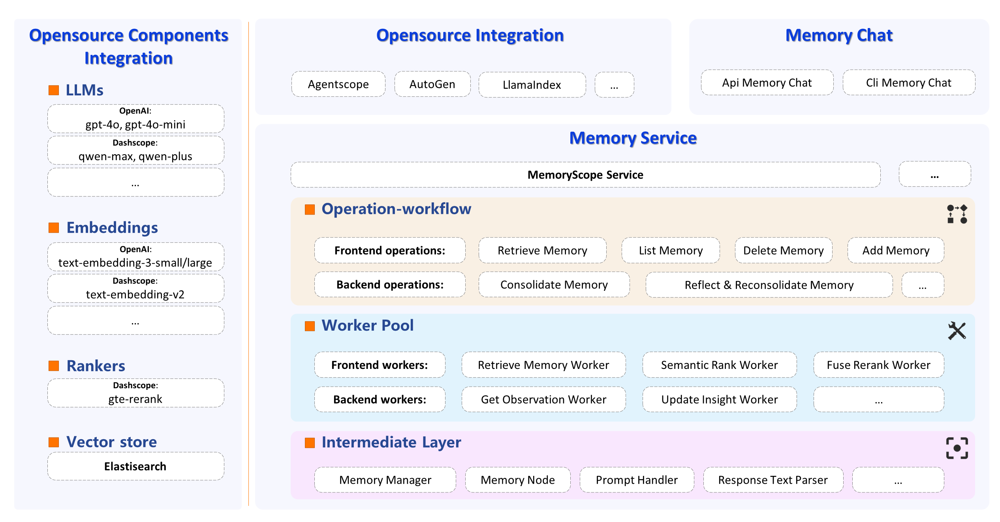

MemoryScope 文档
欢迎浏览MemoryScope相关文档
MemoryScope可以为LLM聊天机器人提供强大且灵活的长期记忆能力，并提供了构建长期记忆能力的框架。 MemoryScope可以用于个人助理、情感陪伴等记忆场景，通过长期记忆能力来不断学习，记得用户的基础信息以及各种习惯和喜好，使得用户在使用LLM时逐渐感受到一种“默契”。
核心框架
💾 记忆数据库: MemoryScope配备了向量数据库(默认是*ElasticSearch*)，用于存储系统中记录的所有记忆片段。
🔧 核心worker库: MemoryScope将长期记忆的能力原子化，抽象成单独的worker，包括query信息过滤，observation抽取，insight更新等20+worker。
🛠️ 核心Op库: 并基于worker的pipeline构建了memory服务的核心operation，实现了记忆检索，记忆巩固等核心能力。
记忆检索：当用户输入对话，此操作返回语义相关的记忆片段。如果输入对话包含对时间的指涉，则同时返回相应时间中的记忆片段。
记忆巩固：此操作接收一批用户的输入对话，并从对话中提取重要的用户信息，将其作为 observation 形式的记忆片段存储在记忆数据库中。
- 反思与再巩固：每隔一段时间，此操作对新记录的 observations 进行反思，以形成和更新 insight
形式的记忆片段。然后执行记忆再巩固，以确保记忆片段之间的矛盾和重复得到妥善处理。
MemoryScope 教程